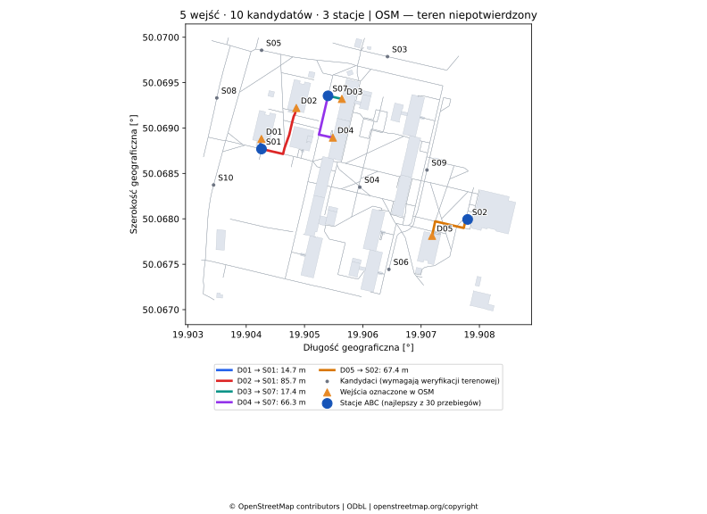
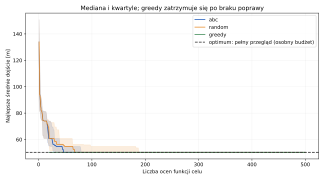

| Wejście | Stacja | Długość |
|---|---|---|
| DS Olimp | S01 | 14.69 m |
| DS Babilon | S01 | 85.74 m |
| DS Filutek | S07 | 17.36 m |
| DS Strumyk | S07 | 66.28 m |
| DS Kapitol | S02 | 67.38 m |
ABC: średnia 50.291 m; greedy + 1-swap: 50.291 m; optimum małej instancji: 50.291 m.
Pełny raport i źródła punktów · Szablon kontroli terenowej · Trasy GeoJSON

Dane © OpenStreetMap contributors, ODbL 1.0. Snapshot z 29.10.2026.